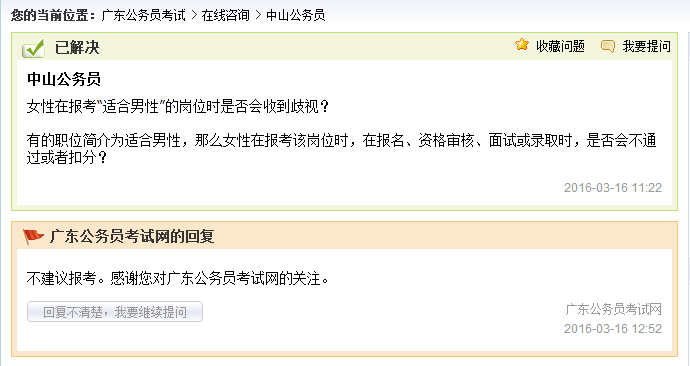

作为一只对公务员一点兴趣都没有的应届狗，在大家报完名都快要考试的时候，我收到一份《2017年国家公务员招考简章》，要求分析其中的性别歧视。
然鹅
首先，我们把国家公务员招聘的岗位分成四类：中央党群机关、中央国家行政机关、中央国家行政机关直属机构（省级以下）和参照公务员法管理事业单位，这四块招录歧视女性的情况如下。
招聘部门 | 拟招聘人数 | “男性” | “女性” | 歧视女性率 |
中央党群 | 203 | 2 | 0 | 0.99% |
中央行政 | 459 | 21 | 0 | 4.58% |
中央行政直属机构 （省级以下） | 12339 | 2180 | 957 | 17.67% |
修订后中央行政直属机构（省级以下） | 12339 | 1223 | 0 | 9.91% |
事业单位 | 2588 | 462 | 0 | 17.85% |
*“男性”为筛选结果，包括“仅限男性”、“适合男性”、“较适合男性”等；“女性”同理
*歧视女性率 =“男性”/ 拟招聘人数
（一）歧视女性的招录单位性质：中央党群<中央行政<中央行政直属机构（省级以下）<事业单位。不知道为什么有种学历越低，越歧视女性的感觉。
（二）涉及“女性”的957个岗位分别是河北/吉林/黑龙江/浙江/福建/湖南/海南/重庆/云南/新疆/内蒙古/深圳/宁波/厦门地区的国税局。而这10省4市国税局的招录简章几乎都是这样的：
招考人数 | 备注 |
1 | 2015年及以后年度毕业的高校毕业生，具有英语四级证书或四级考试成绩425分及 以上，女性 |
1 | 2015年及以后年度毕业的高校毕业生，具有英语四级证书或四级考试成绩425分及 以上，男性 |
（三）问：好奇中央党群机关里“较适合男性”的2个岗位的是什么部门？
答：中央办公厅下属的机要交通局
所需专业：
岗位1汉语言文学、新闻学、行政管理
岗位2法学（仅限法学）、历史学、档案学
招聘人数：各3人
备注：咨询电话：01063093855。取得全国大学英语四级证书或全国大学英语四级考试成绩达到425分以上；政治可靠，有较好的文字综合能力；2年以上事业单位工作经历，现在岗在编；经常出差，较适合男性。
总结：2017年国考招聘歧视女性的岗位（仅限男性、适合男性、较适合男性）为1708个，歧视女性率为10.96%，不存在歧视男性的情况。
其次，让我们来扒一扒这957个所谓的“女性”，“仅限女性”的岗位。澄清一点，由于这些省份的国税局执行男女比例1:1的标准，所以并不是对女性的优惠政策。
机构层级 | “女性” | 百分比 |
省（副省）级 | 1 | 0.001044932 |
市（地）级 | 48 | 0.05015674 |
县（区）级及以下 | 908 | 0.948798328 |
*“女性”岗位中各机构层级所占的比例
机构层级 | 总数 | 百分比 |
省（副省）级 | 162 | 0.013129103 |
市（地）级 | 1225 | 0.09927871 |
县（区）级及以下 | 10952 | 0.887592187 |
*该招聘部门即中央行政直属机构（省级以下）岗位中各层级所占比例
机构层级 | 样本百分比 | 总体百分比 | 比率 |
省（副省）级 | 0.001044932 | 0.013129103 | 12.56455142 |
市（地）级 | 0.05015674 | 0.09927871 | 1.979369276 |
县（区）级及以下 | 0.948798328 | 0.887592187 | 0.935490885 |
*样本百分比=“女性”岗位百分比，总体百分比=中央行政直属机构（省级以下）百分比
（一）通常情况下，我国官员的行政级别是由所在机构的行政级别决定的。招录简章将中央行政直属机构（省级以下）的招聘单位分层三个层级：省（副省）级，市（地）级，县（区）级及以下，越往前级别越高。
将中央行政直属机构（省级以下）的招录岗位视为总体，“女性”岗位视为样本，可以发现在样本中成为省（副省）级和市（地）级及的概率明显低于整体，总体的可能性分别比样本高12.56和1.98。而样本成为县（区）级及以下的概率略高于总体。单以行政级别而论，“女性”岗位的竞争力明显低于该招聘类整体水平。
关键词 | 出现次数 | 占招聘“女性”比例 |
最低服务期限五年 | 851 | 88.92% |
国家级贫困县 | 154 | 16.09% |
省级贫困县 | 78 | 8.15% |
（二）抱着对这些国税局好奇的态度，我随手检索了几个出现频率较多的关键词，发现要求最低服务期限5年的竟然占到了88.92%，贫困县占到24.24%，还不包括哪些没评上贫困县，只能耿直的说自己是艰苦边远地区县乡基层岗位。我好像有点懂了国税局限制男女比例1:1的深远含义。
最后，每次国家公务员考试的简章一出来，就有小朋友在网上各种问，“我是女生，这个岗位说适合男性，那我能不能报呢，能报的话最后面试会被歧视吗？”

注：广东公务员考试网是企业，非政府单位。通过网上检索，可以发现很多公务员培训辅导机构都做出了类似回答。
除了公安部很多岗位“仅限男性”以外，很多招录简章都是本岗位需要经常出差、上夜班、需要下基层调查，适合男性或者较适合男性。分享一则审计署驻广州特派员办事处今年的招录简章：
1.2017年应届毕业生；
|
与之对应的是中国民用航空局华北地区管理局、民航内蒙古安全监督管理局的招录简章：
1.有较强的写作能力； |
同样是要求出差，这些招录简章能否好好说话。在昨日召开的第六次全国妇女儿童工作会议上李克强指出，要消除性别歧视，实行同工同酬，加强对女职工特殊劳动保护，加大技能培训、税费减免、法律援助等支持，帮助妇女就业创业，加大妇女人才培养、女干部选拔力度，提高参与经济社会事务管理的机会和能力。而即将开始的2017年国家公务员考试中某些招录岗位却进行所谓的性别建议，影响女性的自主选择，明显与会议的精神相违背。尊重妇女是社会文明进步的重要标志，国家公务员考试不仅应当发挥选拔人才的作用还应当遵守现有的法律法规，禁止变相的歧视女性或提高女性的录用标准。